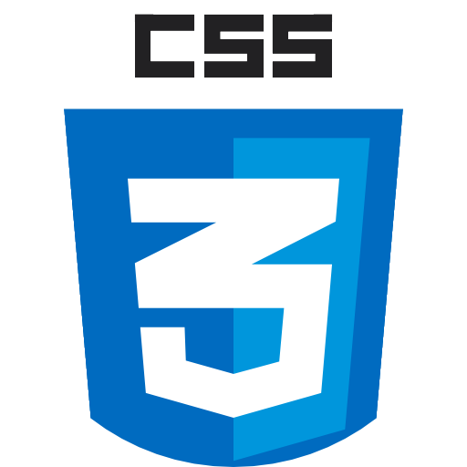
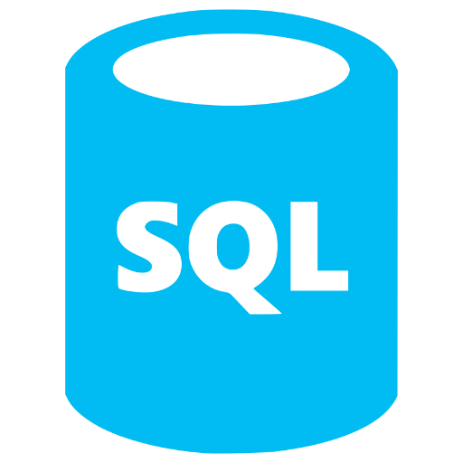
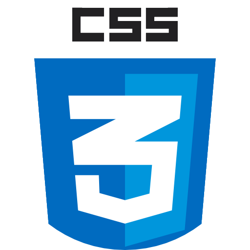
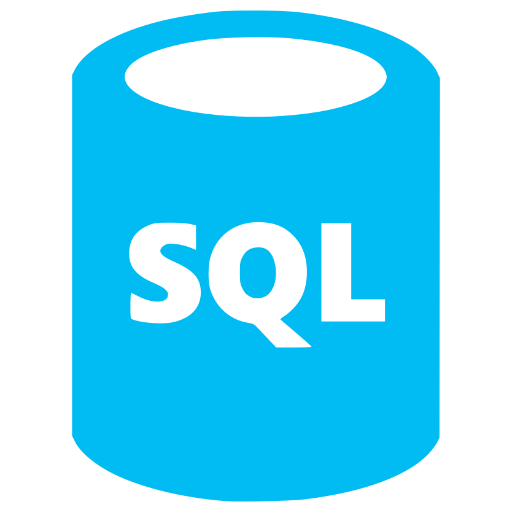

Steve Martin
IT Professional
Code Creator
Creative Solutionist
 



Overview
Work Experience
Application Support Lead
Specsavers
July 2021 - Present
Development Support Analyst
B&Q
July 2017 - July 2021
Service Desk Analyst
Kingfisher IT Services
July 2017 - July 2021
Education & Training
BA (Hons) Animation
University for the Creative Arts
September 2008 - May 2011
Datacamp Courses
Introduction to Python for Developers - April 2025
Introduction to SQL - April 2025
Supervised Learning with scikit-learn - April 2025
Linkedin Courses
Networking Foundations: Network Media (WANs) - October 2021
Learning Subnetting - September 2021
Networking Foundations: IP Adressing - September 2021
Networking Foundations: Network Media (LANs) - September 2021
Learning IP Addressing - August 2021
Learning Powershell - August 2021
Learbning Splunk - August 2021
Networking Foundations: Networking Basics - August 2021
Choosing a Cross-Platform Development Tool - July 2021
Agile at Work: Building Your Agile Team - February 2021
Scrum: The Basics - February 2021
Software Development Life Cycle (SDLC) - February 2021